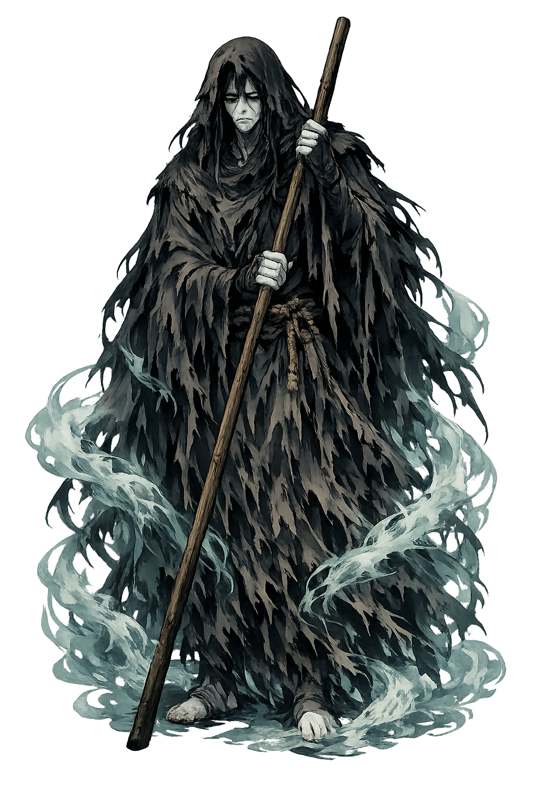
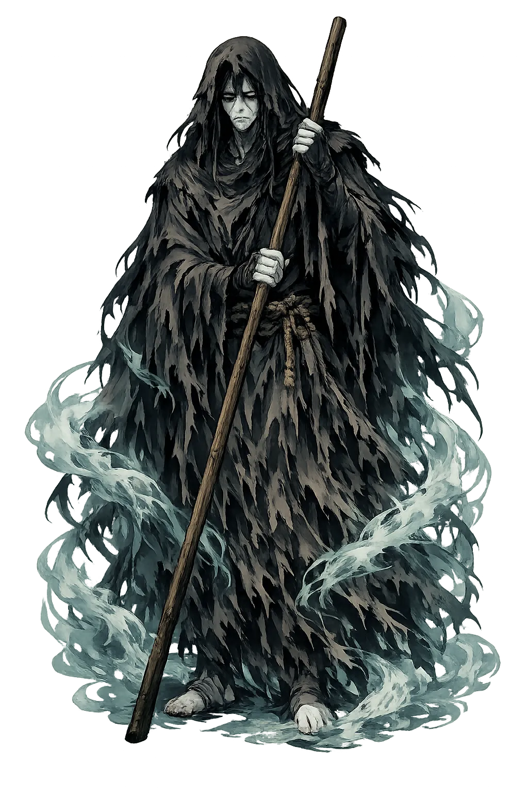

Ancient Domain
Achérōn is the river of woe, one of the great boundary rivers of the Greek underworld. Real in Epirus and mythic in Hades, it marks the place where the living must stop and the dead begin their journey.
Extended Lore
Etymology · Phonology · Orthography · Cultural Legacy · Primary Sources

Essential information about Achérōn, River of Woe
From original script to Unicode restoration
Achérōn is Tier 1 because the Greek Ἀχέρων contains both stress (acute on έ) and length (ω). The name is at once a real river in Epirus and the mythic boundary of Hades.
Character-by-character philological analysis
| Character | Unicode | Name | Block | Phonetic Role |
|---|---|---|---|---|
| A | U+0041 | Latin Capital Letter A | Basic Latin | A uppercase |
| c | U+0063 | Latin Small Letter C | Basic Latin | c same |
| h | U+0068 | Latin Small Letter H | Basic Latin | h same |
| é | U+00E9 | Latin Small Letter E with Acute | Latin-1 Supplement | Acute on e |
| r | U+0072 | Latin Small Letter R | Basic Latin | r same |
| ō | U+014D | Latin Small Letter O with Macron | Latin Extended-A | Macron: long vowel |
| n | U+006E | Latin Small Letter N | Basic Latin | n same |
The Tier 1 classification reflects how much of the original phonology this restoration preserves — stress and vowel length for Greek names, distinctive letters and diacritics for every other tradition.
From ancient cult to modern Unicode
Achérōn is the river of woe, one of the great boundary rivers of the Greek underworld. Real in Epirus and mythic in Hades, it marks the place where the living must stop and the dead begin their journey.
The Greek underworld rivers were mapped onto real landscapes, especially the Thesprotian Acheron, where an oracle of the dead (Nekromanteion) operated. Roman poets Virgil and Ovid developed the river's role in the geography of Hades. Christian tradition transformed the Acheron into one of the rivers of hell, often conflated with the Styx. The name survives in modern Greek geography and in every reference to 'Acheron' as a symbol of sorrow.
Achérōn is the river whose name means grief. It appears in Dante's Inferno, in Romantic poetry, and in every metaphor that turns a dark stream into the threshold of death. The real Acheron in Epirus still carries the name, its waters a tourist route to an ancient oracle of the dead. The boundary between geography and myth remains thin there.
Restoring Achérōn in a domain name is more than orthographic accuracy. It is a statement that the internet should recognize the full range of human writing — not only the ASCII keyboard.
Common questions about Achérōn, River of Woe, and Unicode restoration
In reconstructed pronunciation, Achérōn is /a.kʰé.rɔːn/ — approximately 'ah-KHAY-rohn' — the middle syllable is pitched high; the final -ōn is long and sonorous..
Achérōn means River of woe in the greek tradition.
Achérōn is associated with Dark water (The boundary liquid that the dead must cross), Cypress and willow (Trees of mourning that grow along its banks), Charon's boat (The ferry that carries souls across the river), Reeds and marsh (The liminal landscape where solid ground dissolves into the underworld).
Plain ASCII acheron strips the stress, length, and script that make the name specific. Unicode restoration returns the name to its original written dignity.
Hesiod never gives the river a genealogy — the Theogony's catalogue of the sons of Oceanus and Tethys does not name Acheron. Plato's Phaedo (112e–113c) gives the fullest ancient map: Acheron flowing opposite Oceanus, under the earth, into the Acherusian Lake, where the souls of the dead gather and are purified. From this cosmic geography comes its status: it is not merely a local stream but a branch of the primordial waters.
The philological foundations of this restoration
Every claim on this page is grounded in established scholarship. The orthographic restorations follow disciplinary convention. The etymological chain follows the best available reference works. This is not invention — it is resurrection through scholarship.
You have traced the name from its earliest attestation to its Unicode restoration. Now return to the myth. The story is where the name lives.
Back to Lore